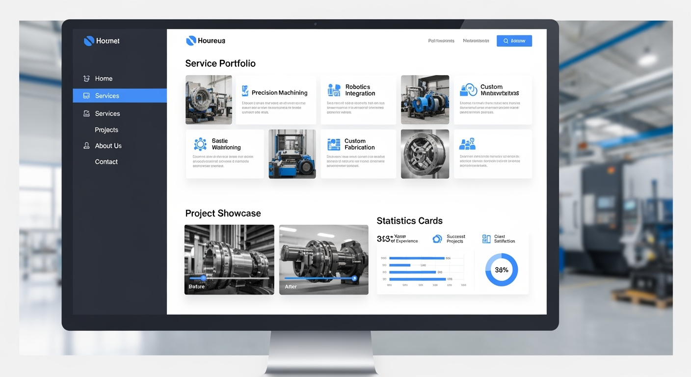

匠機エンジニアリング株式会社
コーポレートサイト制作 要件定義書
製造業・建設業のプロフェッショナルに向けた信頼性と専門性を重視したコーポレートサイトの制作要件を定義します。
1. プロジェクト概要
2ヶ月
制作期間
5ページ
基本ページ数
45名
従業員数
15年
事業実績
プロジェクトの目的・背景
- 会社の信頼性・専門性の向上 - 製造業界でのブランドイメージ確立
- BtoB顧客への情報発信強化 - 技術力と実績の効果的なアピール
- 問い合わせ・商談機会の創出 - リード獲得の最適化
- 企業ブランディングの確立 - 匠機エンジニアリングの価値提案の明確化
対象ユーザー
メインターゲット
製造業・建設業関係者（設計・調達・技術責任者）
セカンダリーターゲット
求職者、協力会社、投資家
2. UI/ビジュアル要件
UI案の提示（2案）

デザイン案1: 産業系コーポレートサイト
特徴: 工場や設計現場の写真を使ったヒーローセクション、信頼感を演出するネイビーとオレンジの配色
採用理由: 製造業の専門性と技術力を視覚的にアピールし、BtoB顧客に安心感を提供
生成プロンプト: 「Professional corporate website UI for engineering company, industrial aesthetic, navy blue and orange colors」

デザイン案2: ダッシュボード型レイアウト
特徴: サイドバーナビゲーション、統計カード、プロジェクト事例のグリッド表示
採用理由: データ重視のアプローチで実績と信頼性を効果的に表現、レスポンシブ対応
生成プロンプト: 「Modern dashboard-style corporate website, sidebar navigation, statistics cards, blue-gray palette」
デザイン要件定義
カラーパレット
メインカラー
#003366
アクセント
#FF6600
ベース
#f8fafc
テキスト
#0f172a
サブテキスト
#475569
ボーダー
#e2e8f0
デザインコンセプト
信頼感・専門性・先進性を軸とした製造業にふさわしいプロフェッショナルなデザイン
- フォント: 游ゴシック、メイリオ（日本語）/ Helvetica（英数字）
- レスポンシブデザイン: スマートフォン・タブレット対応必須
- アクセシビリティ: WCAG 2.1 AAレベル準拠目標
3. 会社情報
会社概要
| 会社名 | 匠機エンジニアリング株式会社 |
|---|---|
| 設立 | 2010年4月 |
| 資本金 | 5,000万円 |
| 従業員数 | 45名 |
| 所在地 | 東京都品川区○○○○ |
| 代表取締役 | 田中 匠（たなか たくみ） |
事業内容
1. 設計サービス
- 産業機械設計
- プラント設備設計
- 自動化システム設計
2. 製造サービス
- 精密加工
- 組立・調整
- 品質検査
3. コンサルティング
- 生産効率改善
- 設備保全計画
- 技術指導
強み・特徴
- 20年以上の豊富な実績
- CAD/CAM最新技術の活用
- ISO9001品質管理システム
- 迅速な対応力（設計〜製造まで一貫対応）
4. サイト設計
サイトマップ
graph TD
A[匠機エンジニアリング株式会社] --> B[トップページ /]
A --> C[サービス・事業紹介 /services/]
A --> D[実績・事例紹介 /portfolio/]
A --> E[会社情報・採用 /company/]
A --> F[お問い合わせ /contact/]
C --> C1[設計サービス]
C --> C2[製造サービス]
C --> C3[コンサルティング]
D --> D1[業界別実績]
D --> D2[代表事例]
D --> D3[お客様の声]
E --> E1[会社概要]
E --> E2[組織・体制]
E --> E3[採用情報]
E --> E4[アクセス]
5. ペルソナ設定
メインペルソナ: 製造業 技術責任者
| 属性 | 45歳男性、製造業技術部長、工学系大学卒業 |
|---|---|
| 職責 | 生産設備の設計・導入・最適化の意思決定 |
| 課題 | 生産効率向上、品質管理、コスト削減、納期短縮 |
| 情報収集 | 業界誌、展示会、ウェブ検索、同業他社からの紹介 |
| 重視点 | 技術力、実績、価格、納期、アフターサポート |
ユーザージャーニーマップ
journey
title 製造業技術責任者のサイト利用フロー
section 認知段階
検索エンジンで業者探し : 3: 技術責任者
同業他社からの紹介 : 5: 技術責任者
section 情報収集段階
トップページ閲覧 : 4: 技術責任者
サービス詳細確認 : 5: 技術責任者
実績・事例確認 : 5: 技術責任者
会社概要確認 : 4: 技術責任者
section 検討段階
類似業界の事例研究 : 5: 技術責任者
技術力・品質体制確認 : 5: 技術責任者
価格感の把握 : 4: 技術責任者
section 行動段階
お問い合わせフォーム送信 : 4: 技術責任者
電話での直接相談 : 5: 技術責任者
6. ユーザー要望一覧
要望一覧（優先度・難易度マトリックス）
| 要望内容 | 優先度 | 実装難易度 | 予想工数 | 備考 |
|---|---|---|---|---|
| 信頼感のあるデザイン | 高 | 中 | 40h | ブランドアイデンティティの確立 |
| 技術力アピール | 高 | 低 | 24h | 実績事例の効果的な表示 |
| 問い合わせフォーム最適化 | 高 | 低 | 16h | リード獲得の改善 |
| スマートフォン対応 | 高 | 中 | 32h | レスポンシブデザイン必須 |
| SEO対策 | 中 | 中 | 20h | 検索流入の向上 |
| CMS導入 | 中 | 中 | 48h | WordPress + SWELL |
| 多言語対応 | 低 | 高 | 80h | 将来的な海外展開を見据えて |
7. 機能要件
業務フロー
flowchart LR
A[ユーザー訪問] --> B{初回訪問?}
B -->|Yes| C[トップページ]
B -->|No| D[目的のページへ]
C --> E[サービス紹介確認]
E --> F[実績事例確認]
F --> G[会社情報確認]
G --> H[お問い合わせ検討]
D --> H
H --> I{問い合わせ意向}
I -->|Yes| J[フォーム入力]
I -->|No| K[サイト内回遊継続]
J --> L[問い合わせ送信]
L --> M[自動返信メール]
M --> N[営業担当者対応]
K --> F
主要機能一覧
- コンテンツ管理機能: WordPress CMS
- お問い合わせ機能: Contact Form 7
- SEO機能: SWELL標準SEO機能
- バックアップ機能: UpdraftPlus
- セキュリティ機能: SiteGuard WP Plugin
- 画像最適化: EWWW Image Optimizer
8. 技術要件
システムアーキテクチャ
graph TB
A[ユーザー] --> B[CDN/キャッシュ]
B --> C[Webサーバー]
C --> D[WordPress]
D --> E[MySQL Database]
F[SSL証明書] --> C
G[バックアップ] --> E
H[セキュリティプラグイン] --> D
I[Google Analytics] --> A
J[Google Search Console] --> C
技術スタック
| CMS | WordPress 最新版 |
|---|---|
| テーマ | SWELL |
| PHP | 8.0以上推奨 |
| データベース | MySQL 5.7以上 |
| サーバー | Apache/Nginx + SSL |
パフォーマンス要件
- ページ読み込み速度: 3秒以内
- Google PageSpeed Insights: モバイル・デスクトップ共に80点以上
- 画像最適化: WebP形式対応
9. SEO・アクセシビリティ要件
SEO対策
- メタタグ設定: 全ページでタイトル・ディスクリプション設定
- 構造化データ: 会社情報・事業内容の構造化
- 内部リンク: 適切なアンカーテキスト設定
- サイトマップ: XML・HTML両方作成
目標キーワード
- 「設計 製造 東京」
- 「産業機械 設計」
- 「精密加工 品川」
アクセシビリティ
- WCAG 2.1 AAレベル準拠目標
- カラーコントラスト: 4.5:1以上
- キーボードナビゲーション対応
- alt属性: 全画像に適切な設定
10. セキュリティ要件
基本セキュリティ
- SSL証明書: 常時SSL化
- WordPress更新: 定期的なCore・プラグイン更新
- アクセス制限: 管理画面への不正アクセス対策
- バックアップ: 週1回の自動バックアップ
フォームセキュリティ
- reCAPTCHA: スパム対策
- 入力値検証: サーバーサイド・クライアントサイド両方
- 個人情報保護: SSL暗号化通信
11. 運用・保守要件
コンテンツ更新頻度
| コンテンツ種別 | 更新頻度 | 担当者 |
|---|---|---|
| ニュース・お知らせ | 月1-2回 | 広報担当 |
| 実績事例 | 四半期に1回 | 営業部 |
| 採用情報 | 必要に応じて | 人事部 |
| 会社情報 | 年1回見直し | 総務部 |
技術保守スケジュール
- WordPress更新: 月1回チェック・更新
- プラグイン更新: 月1回チェック・更新
- セキュリティチェック: 月1回
- バックアップ確認: 月1回
12. 成果測定
KPI設定
1,000
月間PV目標
(6ヶ月後)
(6ヶ月後)
3-5件
月間問い合わせ
目標件数
目標件数
2分以上
平均セッション
時間目標
時間目標
60%以下
直帰率
目標値
目標値
分析ツール
- Google Analytics 4: 導入・設定
- Google Search Console: 導入・設定
- ヒートマップツール: 導入検討
13. プロジェクト管理
制作体制
| 役割 | 人数 | 主な担当業務 |
|---|---|---|
| プロジェクトマネージャー | 1名 | 進行管理・品質管理 |
| Webデザイナー | 1名 | UI/UXデザイン |
| WordPress開発者 | 1名 | 実装・技術開発 |
| コンテンツライター | 1名 | 文章作成・SEO対策 |
制作スケジュール
gantt
title 匠機エンジニアリング コーポレートサイト制作スケジュール
dateFormat YYYY-MM-DD
section 設計フェーズ
要件定義・デザイン設計 :done, des1, 2025-09-01, 14d
section デザインフェーズ
デザイン作成・承認 :active, des2, 2025-09-15, 14d
section 開発フェーズ
WordPress実装 :dev1, 2025-09-29, 14d
section コンテンツフェーズ
コンテンツ制作・入力 :content, 2025-10-13, 7d
section テストフェーズ
テスト・調整・リリース :test, 2025-10-20, 7d
14. 納品物
システム納品物
- WordPressサイト一式
- 管理マニュアル
- 更新手順書
- バックアップデータ
ドキュメント納品物
- サイト仕様書
- デザインガイドライン
- SEO設定一覧
- アクセス解析レポート